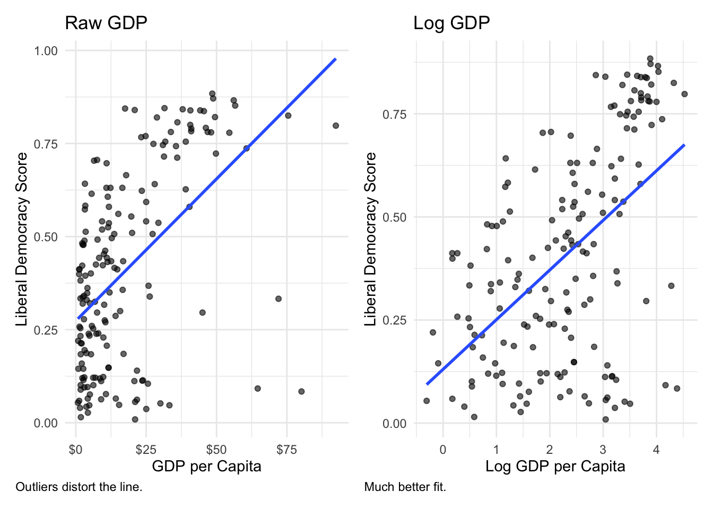
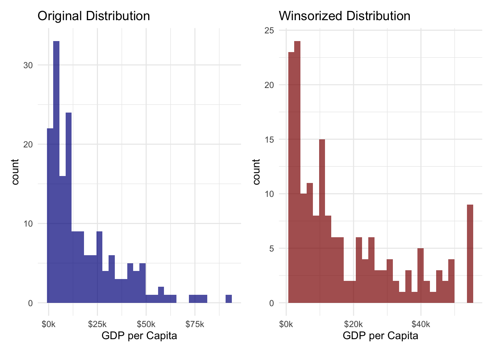

Look over the documentation for the broom package, which we will use to compute regression diagnostics.
Look over the documentation for the datawizard package, which we will use to winsorize our data).
Run this code chunk to load the necessary packages and data for this module:
Code
library(tidyverse)library(vdemlite)# Load V-Dem data for 2019model_data<-fetchdem( indicators =c("v2x_libdem", "e_gdppc", "v2cacamps"), start_year =2019, end_year =2019)|>rename( country =country_name, lib_dem =v2x_libdem, wealth =e_gdppc, polarization =v2cacamps)|>filter(!is.na(lib_dem), !is.na(wealth))
Overview
Remember those wealthy but undemocratic countries (like Saudi Arabia and UAE) that appeared as outliers in our GDP-democracy analysis? In this module, we’ll learn systematic approaches for identifying and handling such outliers. You’ll discover that outliers aren’t always “bad” data points to remove—sometimes they represent the most interesting cases in your analysis!
We will explore a number of key strategies for dealing with outliers once identified, helping you make informed decisions for your own projects. By the end of this module, you’ll have a toolkit for handling outliers in your regression analyses and understand when each approach is most appropriate.
What Are Outliers and Why Do They Matter?
Let’s start by revisiting our democracy and GDP analysis from Module 4.1. Remember this plot?
Notice those points in the southwest corner—wealthy countries with low democracy scores. These are our outliers: observations that don’t fit the general pattern of the data. Try hovering over the points to see which countries they include.
But it is important to note that not all outliers are created equal. In our case, these outliers are not measurement errorr but instead substantively interesting cases! They largely represent oil-rich authoritarian states, which tells us something important about the relationship between wealth and democracy.
Types of Outliers in Regression
In regression analysis, we distinguish between different types of unusual observations:
Leverage points: Extreme values on the x-axis (very high or low GDP)
Influential points: Points that significantly change the regression line when removed
Residual outliers: Points far from the regression line (high residuals)
A point can be one, two, or all three of these simultaneously.
Identifying Outliers: Visual and Statistical Methods
Boxplots for Visual Identification
The simplest way to spot outliers is with boxplots. Let’s examine both our variables with boxplots. Here we will create boxplots for both the democracy scores and the raw GDP per capita (before any transformations) using geom_boxplot(), which we learned about in an earlier lesson. We will store each object as a separate object and then use patchwork to combine them into a single figure.
The Interquartile Range (IQR) method is a common statistical approach for identifying outliers and forms the basis of the boxplot. It classifies a data point as an outlier if it falls more than 1.5 times the IQR below the first quartile (Q1) or above the third quartile (Q3). This helps flag unusually high or low values that may deserve further scrutiny.
In the code below, we identify outliers in GDP per capita using the base R function boxplot.stats(), which applies the IQR method internally. We use the %in% operator to check which GDP values are identified as outliers and store this as a new logical column, gdp_outlier. Since our earlier boxplot analysis showed no democracy outliers, we simplify the analysis here by focusing only on GDP. We then summarize how many outliers there are and list the countries identified as GDP outliers.
# Identify GDP outliers model_data<-model_data|>mutate(gdp_outlier =wealth%in%boxplot.stats(wealth)$out)# Summarize how many outliersmodel_data|>summarize( gdp_outliers =sum(gdp_outlier), percent_outliers =round(100*mean(gdp_outlier), 1))
gdp_outliers percent_outliers
1 6 3.4
# View GDP outlier countriesmodel_data|>filter(gdp_outlier)|>arrange(desc(wealth))|>select(country, wealth, lib_dem)
country wealth lib_dem
1 Luxembourg 92.389 0.798
2 Qatar 80.190 0.084
3 Ireland 75.467 0.825
4 Singapore 72.025 0.333
5 United Arab Emirates 64.628 0.092
6 United States of America 60.641 0.737
Understanding the Code
In the code above, we use the base R function boxplot.stats() to identify GDP outliers. This function returns several components, including a named element called $out that contains the values considered outliers.
So when we write wealth %in% boxplot.stats(wealth)$out we are checking which values of wealth are included in the set of outliers returned by boxplot.stats(). The result is a logical vector (TRUE for outliers, FALSE otherwise), which we store in a new column using mutate().
Identifying Influential Points in Regression
To assess the quality of a regression model and identify observations that may unduly affect the results, we can compute diagnostic statistics. These help us detect data points that are surprising, unusual, or overly influential in determining the regression line. While there are multiple diagnostic measures, three are commonly used: leverage, standardized residuals, and Cook’s distance.
We use the broom package’s augment() function to compute these diagnostics in a tidy, data-frame format. augment() takes a fitted model object (like one created by lm()) and returns the original data along with new columns containing fitted values, residuals, and other diagnostic measures:
.fitted: the predicted values from the model
.resid: the raw residuals (observed – fitted)
.std.resid: standardized residuals (adjusted for their expected variance)
.hat: leverage values, which measure how extreme the predictor values are
.cooksd: Cook’s distance, which combines leverage and residual size to estimate how much a point influences the model
These statistics allow us to flag potentially problematic points:
High leverage points have unusual predictor values. They don’t necessarily distort the model, but they have the potential to. A common rule of thumb is that leverage values greater than twice the mean are worth inspecting.
High residual points are poorly fit by the model—they lie far from the regression line. Standardized residuals larger than ±2 are typically considered large.
High influence points affect the model’s coefficients disproportionately. Cook’s distance greater than 4/n (where n is the number of observations) is a common informal threshold.
By combining these diagnostics, we can identify cases that might merit further attention—due to unusual inputs, poor fit, or disproportionate influence on the model’s results.
library(broom)# Fit modeldemocracy_model<-lm(lib_dem~log(wealth), data =model_data)# Get model diagnostics (with original data attached)model_diagnostics<-augment(democracy_model, data =model_data)# Add thresholds for outlier detectionmodel_diagnostics<-model_diagnostics|>mutate( high_leverage =.hat>2*mean(.hat, na.rm =TRUE), high_residual =abs(.std.resid)>2, high_influence =.cooksd>4/nrow(model_data))# Filter problematic casesmodel_diagnostics|>filter(high_leverage|high_residual|high_influence)|>select(country, wealth, lib_dem, high_leverage, high_residual, high_influence)
The analysis identified a fairly large number of cases as having high leverage, large residuals, or high influence. But it is important to note that these are not necessarily errors in the data or points that necessarily have to be removed. Rather, they are observations that deviate from what the model expects and exert a disproportionate pull on the regression line.
Your Turn!!
Try running the regression with polarization as the independent variable instead of wealth.
Now use the code above to identify influential observations in this new model.
What do you notice? Are there any countries that are influential in both models? Or are most of the influential points new ones?
Dealing with Outliers: Strategies and Considerations
Outliers and influential observations warrant closer inspection. Outliers may represent countries with unusual political or economic profiles, or cases that do not conform well to the general trend. Influential observations often reveal the limits of a simple model and can point to deeper questions about the structure of the data or the need for additional variables.
After considering extreme or influential data points more closely, we can decide what to do with them. One option is to do nothing and leave them in the dataset as is. Another option to assess how much they affect the results by re-estimating the model with and without them. Another option is to tranform the data to reduce their influence. Finally, we can perform an operation called winsorizing, which caps extreme values at a specified percentile rather than removing them entirely.
Removing Outliers
One approach is to remove outliers entirely. This is appropriate when the outliers represent data entry errors, they come from a different population than your main analysis, or you want to understand the relationship for the “typical” cases. But another option is to remove outliers or influential points termporarily to see how they affect the results. If they change the results significantly, this should be acknowledged and discussed.
Let’s start by rerunning the regression model with the original data, including all observations:
democracy_model<-lm(lib_dem~log(wealth), data =model_data)summary(democracy_model)
Call:
lm(formula = lib_dem ~ log(wealth), data = model_data)
Residuals:
Min 1Q Median 3Q Max
-0.57441 -0.14334 0.03911 0.18730 0.37017
Coefficients:
Estimate Std. Error t value Pr(>|t|)
(Intercept) 0.13051 0.03806 3.429 0.000758 ***
log(wealth) 0.12040 0.01471 8.188 5.75e-14 ***
---
Signif. codes: 0 '***' 0.001 '**' 0.01 '*' 0.05 '.' 0.1 ' ' 1
Residual standard error: 0.2233 on 172 degrees of freedom
Multiple R-squared: 0.2805, Adjusted R-squared: 0.2763
F-statistic: 67.04 on 1 and 172 DF, p-value: 5.754e-14
Now let’s remove some of the problematic points we found earlier. Since we identified several countries as having high leverage, large residuals, or high influence, let’s see how removing them affects our regression results. We’ll fit the model both with and without these outliers and compare the results. Let’s start by removing the outliers.
# Remove countries with extreme leverage or influencemodel_data_no_outliers<-model_diagnostics|>filter(!high_leverage|!high_residual|!high_influence)|>select(country, wealth, lib_dem,)
Understanding the Code
Here we use the filter() function in conjunction with the ! and | operators. The ! operator negates the condition, so !high_leverage means “not high leverage.” The | operator means “or,” so we are filtering out any rows that have high leverage, large residuals, or high influence.
Now let’s fit the model without the outliers to see if our results substantially change.
model_without_outliers<-lm(lib_dem~log(wealth), data =model_data_no_outliers)summary(model_without_outliers)
Call:
lm(formula = lib_dem ~ log(wealth), data = model_data_no_outliers)
Residuals:
Min 1Q Median 3Q Max
-0.55358 -0.14282 0.04255 0.18092 0.37282
Coefficients:
Estimate Std. Error t value Pr(>|t|)
(Intercept) 0.12166 0.03756 3.239 0.00144 **
log(wealth) 0.12568 0.01459 8.614 4.53e-15 ***
---
Signif. codes: 0 '***' 0.001 '**' 0.01 '*' 0.05 '.' 0.1 ' ' 1
Residual standard error: 0.2195 on 171 degrees of freedom
Multiple R-squared: 0.3026, Adjusted R-squared: 0.2985
F-statistic: 74.2 on 1 and 171 DF, p-value: 4.534e-15
Here we do not notice a substantial difference between these results and those of the original model. We see that the coefficient for log(wealth) remains positive and statistically significant, and the R-squared value is similar. This suggests that while the outliers were influential, they did not fundamentally change the relationship between GDP and democracy in this case.
Data Transformation
Now that we’ve identified outliers in our raw data, let’s see how transformations can help reduce their influence. We’ve already been using one transformation—taking the log of GDP! Let’s see why this helps with outliers.

Notice how the log transformation improves the model fit. This is because logging compresses large values, reducing the influence of those extremely wealthy outlier countries.
Other common transformations, like the square root and Box-Cox transformations, can also help manage skewed data and reduce the influence of outliers. Like the log transformation, these approaches work by compressing large values, which pulls extreme observations closer to the main body of the data. This can lead to a better-fitting model and more stable inferences.
The square root transformation is useful when data are moderately skewed and values are all positive. It’s a simpler alternative to logging and is often used when data contain some high values but not extreme outliers.
The Box-Cox transformation is more flexible—it finds the “best” power transformation (e.g., square root, log, reciprocal) based on the data itself. It’s especially helpful when you’re unsure which transformation is appropriate. Like log and square root transformations, Box-Cox can improve linearity and reduce the impact of outliers.
When we compare models using different transformations, we often look at goodness-of-fit measures like R-squared, adjusted R-squared, and AIC. These metrics help us assess whether the transformation improves model fit while avoiding overfitting. In general, a higher adjusted R-squared and a lower AIC suggest a better-fitting model.
We won’t go deep into the code here, but it’s important to know that transformations are a standard part of the data science toolkit. They help models perform better when relationships are nonlinear or when extreme values distort the picture. The log transformation is one example—but not the only one—of how transforming variables can lead to more meaningful and interpretable results.
Winsorizing
Winsorizing is another technique to reduce the impact of extreme values, especially when we don’t want to throw out data points entirely. Unlike trimming (which removes outliers), Winsorizing caps them at a specified percentile. For example, using the 95th percentile replaces all values above it with the 95th percentile value.
This can help tame the influence of outliers in a way that’s less aggressive than deletion and doesn’t distort model assumptions as much as leaving extreme values untouched. It’s especially useful when you suspect that very high or low values are distorting the fit of your regression.
Let’s Winsorize our GDP data at the 95th percentile using the winsorize() function from the datawizard package. This will cap extreme values at the 95th percentile, reducing their influence without removing them entirely.
library(datawizard)# Winsorize the datamodel_data_winsorized<-model_data|>mutate( wealth_win95 =winsorize(wealth, threshold =0.05))
Now let’s visualizing the winsorizing effects.
# Show the effect of winsorizing on raw GDP dataoriginal_plot<-ggplot(model_data, aes(x =wealth))+geom_histogram(bins =30, alpha =0.7, fill ="darkblue")+scale_x_continuous(labels =scales::label_dollar(suffix ="k"))+labs(title ="Original Distribution", x ="GDP per Capita")+theme_minimal()winsorized_plot<-ggplot(model_data_winsorized, aes(x =wealth_win95))+geom_histogram(bins =30, alpha =0.7, fill ="darkred")+scale_x_continuous(labels =scales::label_dollar(suffix ="k"))+labs(title ="Winsorized Distribution", x ="GDP per Capita")+theme_minimal()original_plot|winsorized_plot

Here we clearly see how winsorizing reduces the impact of extreme values. The histogram on the left shows the original distribution with its long right tail, while the winsorized histogram on the right caps those extreme values, making the distribution a bit more symmetric.
Robust Regression
One last approach we will briefly explore is robust regression. This technique is designed to be less sensitive to outliers than ordinary least squares (OLS) regression. It uses different loss functions that reduce the influence of extreme values, making it a good choice when you have outliers that you do not want to remove or transform. We can perform robust regression using the rlm() function from the MASS package, which implements a robust version of linear regression.
# Robust regression is less sensitive to outlierslibrary(MASS)robust_model<-rlm(lib_dem~log(wealth), data =model_data)summary(robust_model)
Call: rlm(formula = lib_dem ~ log(wealth), data = model_data)
Residuals:
Min 1Q Median 3Q Max
-0.60880 -0.15368 0.03422 0.17024 0.37024
Coefficients:
Value Std. Error t value
(Intercept) 0.1178 0.0385 3.0619
log(wealth) 0.1311 0.0149 8.8195
Residual standard error: 0.2429 on 172 degrees of freedom
Here we see that the coefficients and significance levels are similar to our original OLS model, but we can be more confident that the results are not overly influenced by the outliers we identified earlier.
Your Turn!!
Try removing the influential points in the polarization model that you created earlier.
Rerun the model with those influential points removed and compare the results to the original model.
How do the results change? Do you notice any differences in the coefficients or significance levels?
Now try winsorizing the polarization data at the 95th percentile and rerunning the model. How does this affect the results?
Finally, try running a robust regression on the polarization data. How do the results compare to the original model and the winsorized model?
Making the Right Choice
When dealing with outliers and influential observations, the most important step is to understand their nature and context. Outliers caused by data entry errors or coming from clearly different populations (like microstates in a global dataset) may justify removal. But many outliers are legitimate and may be the most substantively interesting cases in your data. In those situations, it’s often better to retain them and use transformations (like logging or Box-Cox) to reduce their influence, especially when the data are naturally skewed. Winsorizing offers a middle ground—keeping all observations while capping extreme values—particularly useful in predictive modeling or when you suspect noise in the extreme tails.
Whatever approach you take—removal, transformation, winsorizing, or none at all—it’s essential to report your decisions clearly and check how they affect your results. Describe how you identified outliers, explain your reasoning for handling them in a specific way, and conduct a brief sensitivity analysis to see if your main conclusions change. Outlier handling is not just a technical step; it’s a modeling decision that should be transparent and justifiable to your audience.